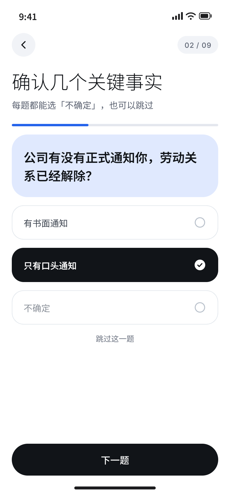
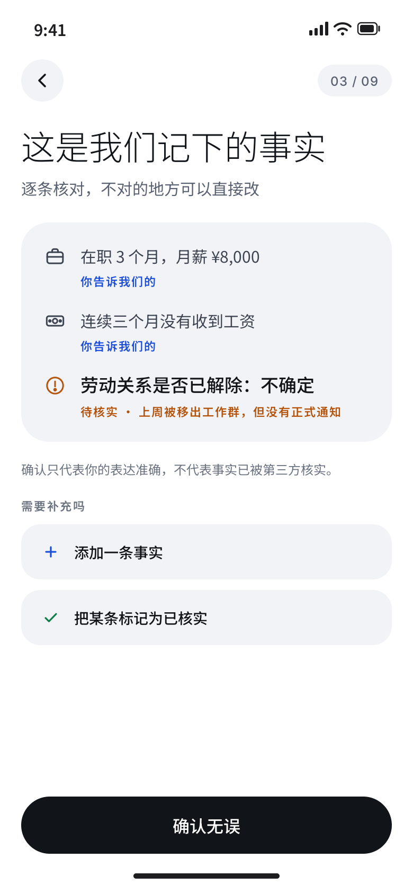
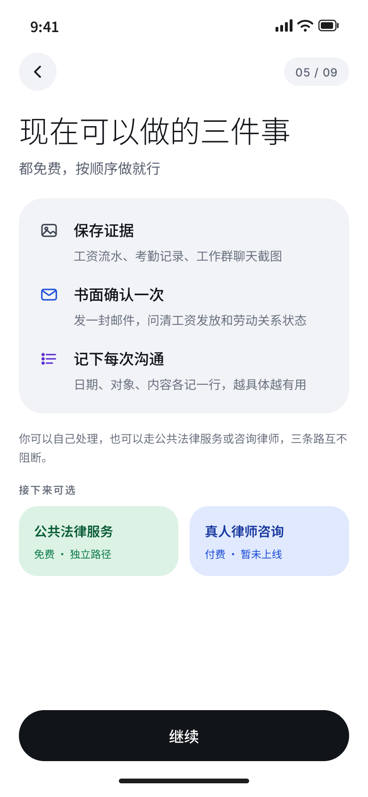
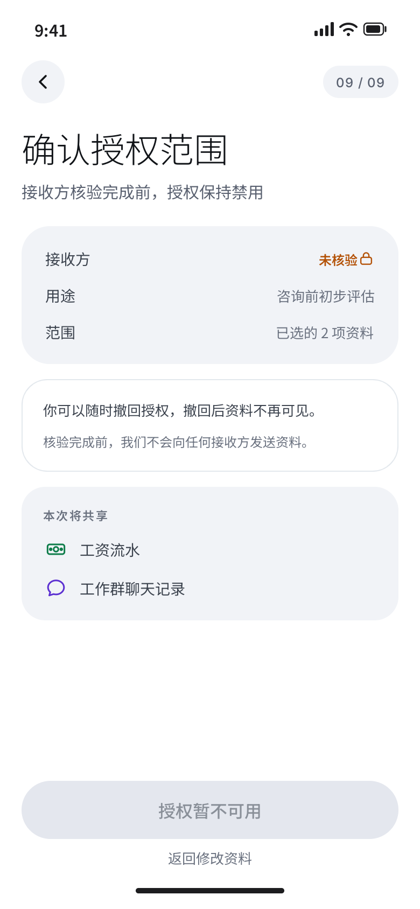

三个月没发工资，用户说不清哪里有问题
连续三个月没收到工资，最近又被移出工作群。这算不算被辞退？该留哪些证据？这是案例的起点。
要处理的不是法条，而是一段生活化的叙述怎么变成用户能检查的事实、能看懂的分析，和能自己选的下一步。
九个页面，每一步都能停
AI 负责整理和说明，走不走下去由用户决定。
- 先用大白话讲，不要求懂术语。
- 关键事实一条条确认，可以答「不知道」，也可以跳过。
- 分析只在事实确认之后出现，随时能退出。
五个取舍：不逼人开口，不把猜测当事实
界面上的每个选择，都对应一种用户可能卡住的情况。
- 选择题降低开口难度，但保留「不确定」和「跳过」。
- 用户能改摘要，改完只代表说得准，不代表被第三方核实。
- 转律师、传资料都不默认勾选，得用户自己点。
九张界面：从描述问题到授权确认
按用户实际走的顺序看。








三种状态：事实待定、服务没落实、授权不可用
事实没确认之前，分析不往下走。
逐题追问时事实还没定，摘要里把待核实的单独标出来。
分析先说能判断到哪，再说能做什么；公共法律服务和律师咨询各留一个入口。
把「分析」「行动」「授权」分成三种样子
三种内容不该长得一样，用户扫一眼要知道自己在哪一段。
- 描述和追问用短段落加问题卡，下一题入口明确。
- 分析用深色结论区交代判断到哪，浅色区放情况和待核实内容。
- 选择和确认分开，授权前先看到接收方和用途。
颜色和权限，都不替用户做主
蓝是用户说的，琥珀是待核实，绿是行动或确认；颜色旁边一定有字。
分析文案没有经过法律人士审过，12348 的办理规则也没核。原型不接真实 AI、律师、支付和上传。
- 被移出工作群不等于劳动关系终止，工作状态保持未知。
- 用户陈述、用户确认、证据材料和 AI 推断，不能混成同一种事实。
- 用户说手上有劳动合同，不会自动被勾选成共享资料。
- 预览不等于授权；接收方没核验，授权按钮就是禁用的。
验过的，和没验的
九张图是概念设计里的主流程，没有真实用户走过。
- 待验证：目标用户能不能自己补齐事实、看懂分析的边界。
- 待复核：法律专业人士对措辞和服务边界的审阅。
- 方案里的 AI、律师、支付和资料发送都还只是设想。
 Homie · 一句话之后，老人要看得懂
Homie · 一句话之后，老人要看得懂 智审 · AI 指出来，人来核
智审 · AI 指出来，人来核